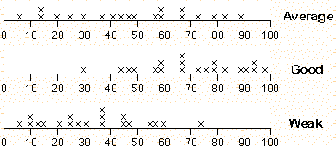

Obtaining percentiles
If a national reference distribution is available for a particular assessment activity, how can it be used to help interpret the marks from individual students?
One way is to translate individual marks into percentiles from the reference distribution. The percentile for any student is the percentage of the reference distribution that received lower marks than this student. (To be more precise, we add the proportion getting lower marks to half the proportion getting the same mark as the student.)
School Entry Assessment
The jittered dot plot below shows the marks of 20 students who attempted the 'Checkout' task in the School Entry Assessment kit.
Click on any cross on the dot plot of the raw marks. The proportion of students in the reference population who got less than this — the percentile -- is the sum of the highlighted bars on the bar chart above.
Note that the percentiles in a class will be evenly spread between 1 and 100 if the class is 'average', but will be bunched higher for a 'good' class and bunched lower for a 'weak' class.
